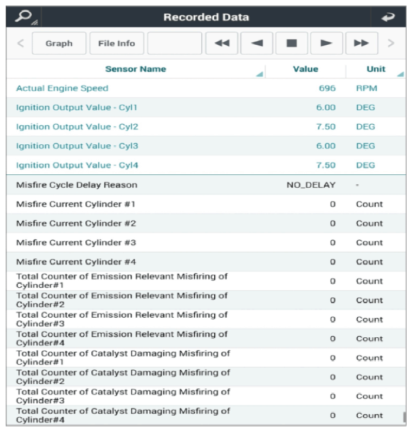

LEMON Manuals
: Even more car manuals for everyone: 1960-2025
Home
>>
Hyundai
>>
2022
>>
Elantra N Line, Standard Trans
>>
Repair and Diagnosis (Single Page)
>>
Engine Performance
>>
Testing & Diagnosis
>>
Engine Control System Diagnosis - 1.6L (Except HEV) (3 Of 6)
>>
DTC P0300-00: Random/Multiple Cylinder Misfire Detected
>>
DTC Information And Inspection
>>
Monitor Current Data
Monitor Current Data
Connect GDS to Data Link Connector (DLC).
Warm up the engine to the normal operational temperature.
Select items related to the DTC in the "Current Data" of the GDS.
Reference:
Current Data

Courtesy of HYUNDAI MOTOR AMERICA